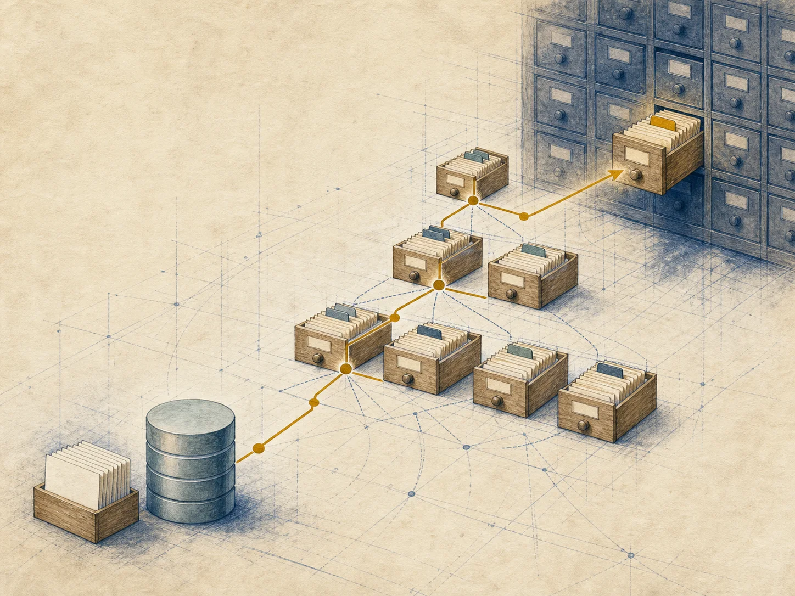
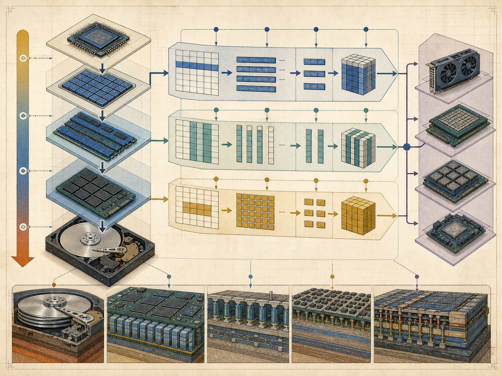
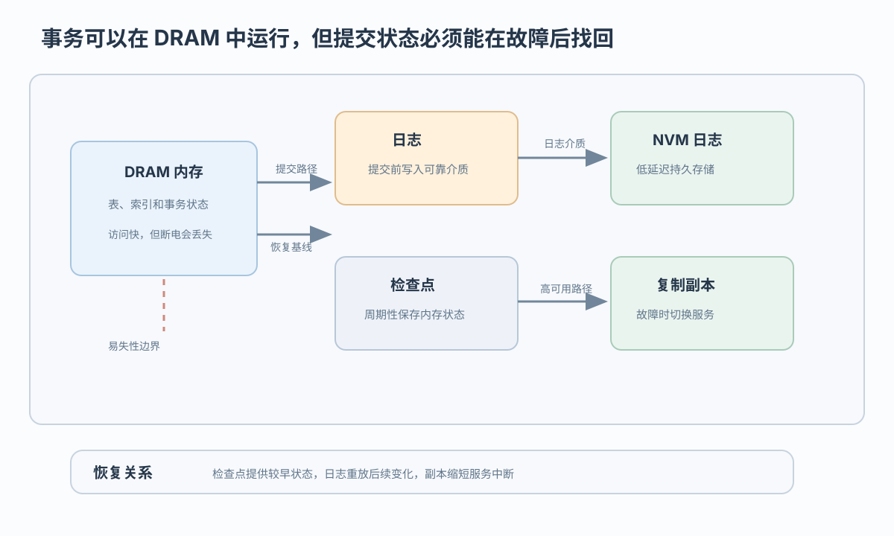
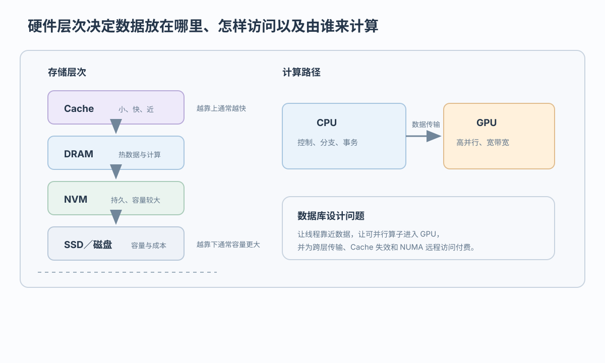

存储布局
DRDB 依赖页、槽位和缓冲区；IMDB 面向内存布局组织记录

内存驻留改变存储、查询和恢复设计
 VER. 2608.3
Built with impress.js
VER. 2608.3
Built with impress.js
完成本节后，你应该能够
两者都使用 CPU、内存和 Cache；主存储假设和访问路径决定优化重点

| 维度 | 磁盘驻留数据库（DRDB） | 内存数据库（IMDB） |
|---|---|---|
| 主存储 | 工作数据主要驻留磁盘，内存缓存热点 | 核心工作数据驻留内存，仍需持久介质与恢复路径 |
| 访问路径 | 页／槽进入缓冲区，再由 CPU 处理 | 处理器直接访问面向内存的记录与索引结构 |
| 典型优化重点 | I/O 与缓冲命中，也要关注 CPU 与 Cache | CPU、Cache 与并行，也要承担持久性 I/O |
| 外存角色 | 工作数据与持久副本 | 后备、日志或其他持久性路径 |
存储布局、索引和查询模型都要面向内存访问重新设计
DRDB 依赖页、槽位和缓冲区；IMDB 面向内存布局组织记录
DRDB 通过缓冲区间接访问数据；IMDB 直接访问面向内存的结构并缩短指针路径
DRDB 以 I/O 与缓冲命中为重点；IMDB 关注 Cache、并行和内存带宽
完整缓存仍可能保留页／槽布局和缓冲区管理开销；IMDB 还要面向内存访问重设计存储和查询模型
事务可在内存完成，但提交状态必须可恢复

SIMD 提供数据级并行，多线程提供任务级并行，Cache 局部性优化访存
同一条指令同时处理一组数据，适合规则的向量化操作
多个核心并行推进任务，但要承担同步和共享资源竞争
让重复或相邻数据更可能被快速访问；它是访存优化，不是另一种并行级别
选择、投影和聚集等批量算子可能受益；数据布局、内存带宽、分支不规则和同步开销可能抵消收益
NUMA 以节点组织处理器与本地内存，强调局部性与负载均衡
线程访问本节点内存；在竞争条件相近时通常延迟较低
线程跨 NUMA 节点取数；通常延迟更高并占用互连带宽
数据分区和线程绑定减少远程访问，但过度绑定可能破坏负载均衡
“尽量靠近”是优化倾向，不是必须同节点；实际取舍取决于局部性、竞争和负载均衡
CPU 与 GPU 的分工是典型协作，收益取决于算子、数据规模和传输成本
CPU 负责解析、事务、分支和复杂流程控制
GPU 负责规则、大批量、计算密集型的数据处理
选择、投影、连接、聚集和排序等操作都可能成为候选操作
CPU 与 GPU 传输、分支不规则或数据规模不足可能抵消收益
NVM 是一类技术，不是单一设备；具体读写特征决定它适合什么角色

| 层次 | 主要优势 | 数据库角色 |
|---|---|---|
| DRAM | 延迟低但易失 | 活跃数据和高速计算 |
| NVM | 非易失；容量和读写特征随介质而变 | 日志或温数据等候选角色 |
| SSD／磁盘 | 常见成本低、容量大 | 冷数据或备份等常见角色 |
“越靠上通常越快、越靠下通常容量更大”是层次趋势；具体部署仍取决于介质特征、成本和恢复要求
新硬件机会需要在存储、访存、执行和恢复层重新设计
主存储和访问路径不同，但两者都使用 CPU、内存和 Cache
内存布局、索引和查询模型都要面向 Cache、并行和带宽重设计
日志、检查点和 NVM 支持恢复；复制主要服务高可用和故障切换
SIMD、多核、NUMA、GPU 和 NVM 提供机会，也带来传输、竞争和局部性代价
内存驻留带来的性能优势，需要持久性补偿、局部性优化和硬件协作才能成立